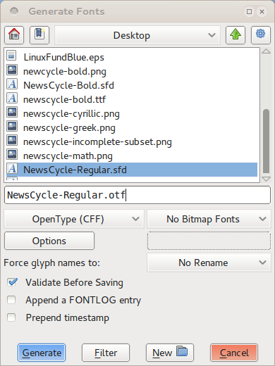
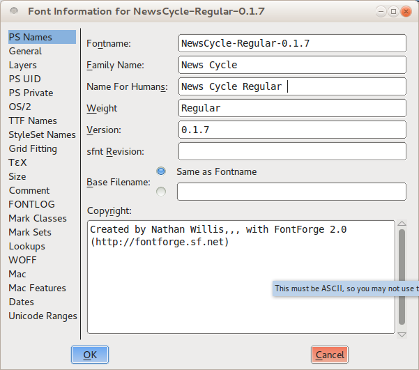
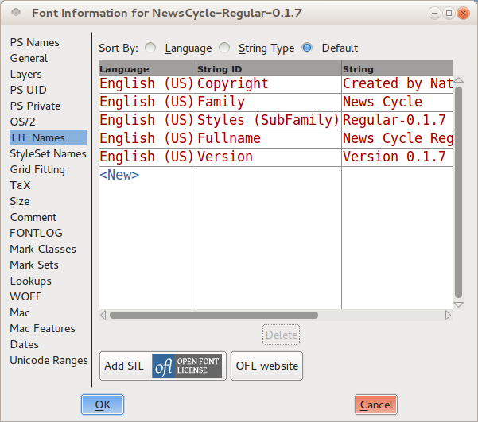
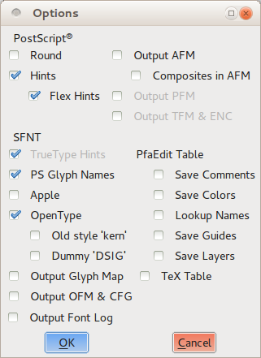

Окончательный результат, создание файлов шрифтов
Несмотря на то, что можно выполнять широкий спектр тестов внутри FontForge, необходимо будет создать устанавливаемые файлы шрифтов, чтобы проводить тестирование в реальных условиях в процессе разработки. Кроме того, конечная цель, конечно же, — создать шрифт, который можно сделать доступным в выходном формате для установки и использования другими людьми. Будет использоваться инструмент Generate Fonts (находится в меню File) для создания пригодного для использования выходного шрифта независимо от того, создается ли для собственных целей тестирования или публикации для использования другими, но потребуется выполнить несколько дополнительных шагов, когда создание готового продукта.
FontForge может экспортировать шрифт во множество различных форматов, но на практике важны только два: TrueType (который находится с расширением имени файла .ttf) и OpenType CFF (который находится с расширением .otf). Технически формат OpenType может включать в себя ряд других вариантов, но тип CFF широко используется.
Быстрая и грязная генерация для тестирования
Чтобы создать файл шрифта для целей тестирования — например, для проверки интервалов в веб-браузере — нужно только убедиться, что шрифт прошел необходимые проверочные тесты.
Для этого можно использовать инструмент Validate Font, расположенный в меню Element (смотреть Проверка работоспособности вашего шрифта, проверка для более подробного объяснения), или можно выбрать все глифы (hit Ctrl + A или выбор “Select” > “Select All” из “Edit” меню) затем запустить несколько команд, чтобы массово применить некоторые базовые изменения. Однако обязательно сохранить свою работу, прежде чем продолжить: некоторые изменения, необходимые для проверки шрифта для экспорта, изменят форму глифов тонкими способами.
Для шрифтов OpenType сначала исправить направление всех путей. Нажать Ctrl + Shift + D или выбрать “Correct Direction” в меню “Element”. Далее проверить, не оставлены ли незакрытые пути. Выбрать “Find problems” в меню “Element”, выбрать параметр Open paths на вкладке “Paths” и нажать OK, чтобы запустить тест. Как только шрифт пройдет тест без ошибок, готовиться генерировать выходные данные OpenType.
Для шрифтов TrueType требуется несколько дополнительных шагов. Сначала следует исправить направление всех путей, как описано выше. Затем настроить все точки так, чтобы они имели целочисленные координаты, либо нажать Ctrl + Shift + _ (подчеркивание), либо выбрать To Int в меню “Element” > “Round”. Наконец, открыть инструмент “Find Problems”, выбрать тест Open paths, как описано выше, а также выбрать все тесты на вкладке “Refs”.
После того как выполнить эти тесты без ошибок, преобразовать пути в квадратичные кривые. Открыть окно “Font Info” из меню “Element”. Нажать на вкладку “Layers” и установить флажок All layers quadratic. Нажать ОК в нижней части окна, и готовность генерировать выходные данные TrueType.
Создание файлов шрифтов
Открыть окно Generate Fonts, выбрать его в меню “File”. В верхней половине окна показаны знакомые параметры выбора файлов —, список файлов, найденных в текущем каталоге, поле ввода текста для ввода имени файла и кнопки для перехода к другим папкам и каталогам при необходимости. Это исключительно средство, которое поможет быстро найти подходящее место для сохранения выходного файла или выбрать существующий файл шрифта, если задача перезаписать предыдущее сохранение. Все параметры, на которые обратить внимание, находятся в нижней половине окна.

On the left-hand side is a pull-down menu from which you select the format of the font you wish to generate. You should choose either bbo# TrueType #obb or bbo# OpenType (CFF) #obb , as discussed earlier. On the right-hand side, make sure bbo# No Bitmap Fonts #obb is selected. On the line below, make sure bbo# No Rename #obb is selected for the bbo# “Force glyph names to:” #obb option. You can check the bbo# “Validate Before Saving” #obb option if you wish (to potentially catch additional errors), but this is optional. Leave the bbo# “Append a FONTLOG entry” #obb and bbo# “Prepend timestamp” #obb options unchecked.
Click the bbo# “Generate” #obb button, and FontForge will build your font file. You can load the font in other applications and run any tests, but when you are ready to return to editing, remember to re-open the saved version of your font that you created before generating your bbo# .ttf #obb or bbo# .otf #obb output.
Generating for final release
Designing your font is an iterative process, but eventually the day when come when you must declare your font finished bbo# — #obb or at least ready for public consumption. At that point, you will again generate a .ttf or .otf output file (perhaps even both), but before doing so you will need to work through a few additional steps to create the most standards-compliant and user-friendly version of your font file.
First, follow the same preparation steps outlined in the section on quick and dirty generation for testing purposes. In particular, remember to change your font to bbo# All layers quadratic #obb if you are creating a TrueType file.
Remove overlaps
As you know, it is a good idea to keep your letter-forms as combinations of discrete components as you design: stems, bowls, serifs, and other pieces of each glyph. But although this technique is great for designing and refining forms, you want your final, published font to have simple outlines of each glyph instead. This reduces file size a bit, but more importantly it cuts down on rendering errors.
В FontForge есть команда Remove Overlap, которая автоматически объединяет отдельные компоненты глифа в единый контур. Выбор глифа (или даже выбрать все глифы с помощью Ctrl + A), затем нажать Ctrl + Shift + O или выбрать Remove Overlap в меню “Element” > “Overlap”. Однако стоит обратить внимание на одно предостережение: FontForge не может объединять фигуры, если одна из фигур прослеживается в неправильном направлении (то есть, если крайний путь направлен против часовой стрелки). Однако путь, проложенный в неправильном направлении, сам по себе является ошибкой, которую в любом случае следует исправить.
Упростить контуры и добавить точки экстремума
Также следует упростить глифы, где это возможно, — не устраняя детали, а устраняя лишние точки. Это немного уменьшает размер файла для каждого глифа, что значительно увеличивается по всему набору символов шрифта.
В меню “Element” выбрать “Simplify” > Simplify (или нажать Ctrl + Shift + M). Эта команда объединит лишние точки на кривой во всех выбранных глифах. В некоторых случаях будет удалено всего несколько пунктов, в других их может быть много. Выполнить упрощение, не меняя заметно форму каких-либо глифов. Если заметить какой-то глиф, который is слишком сильно изменил с помощью Simplify, не стесняйтесь отменить операцию. Можно поэкспериментировать с командой Simplify More, также расположенной в том же меню; предлагаются настраиваемые параметры, которые могут оказаться полезными.
В любом случае после завершения этапа упрощения добавить недостающие точки экстремумов. Выбрать Add Extrema в меню “Element” (или нажать Ctrl + Shift + X). Как обсуждалось ранее, при редактировании рекомендуется размещать точки на кривой на экстремумах каждого глифа. Тем не менее, все равно выполнить этот шаг при подготовке к окончательному формированию выходных данных, поскольку шаг Simplify иногда удаляет точку экстремума.
Округлять все до целых координат
Последний этап подготовки — округление всех точек (как точек на кривой, так и контрольных точек) до целочисленных координат. Это обязательно для генерации вывода TrueType, но настоятельно рекомендуется также и для вывода OpenType. Может привести к более четкому рендерингу и лучшему расположению сетки при отображении шрифтов без какой-либо дополнительной работы по дизайну.
Чтобы округлить все точки до целочисленных координат, выбрать “Element” > “Round” > To Int.
Как только эта операция будет завершена, вы можете заметить нечто загадочное. Иногда просто из-за особенностей задействованных кривых процессы округления до целочисленных координат, упрощения глифов и добавления недостающих экстремумов могут работать друг против друга. Примером того, когда это может произойти, является ситуация, когда изогнутый внешний край имеет контрольную точку, которая находится сразу за горизонталью или вертикалью; в этой ситуации округление до целочисленных координат может немного сдвинуть кривую и изменить положение экстремумов.
Не существует одноразового решения этой загадки; Единственное гарантированное решение — повторить цикл шагов для затронутых глифов до тех пор, пока они не стабилизируются в точке, где три операции больше не мешают друг другу. Это может занять несколько циклов, но это редкое явление.
Validate
Ваш шрифт должен пройти необходимые проверочные тесты, прежде чем создать окончательный результат. Однако, как и в случае с шагом округления точек до целых координат, иногда другие подготовительные операции могут привести к ошибкам, поэтому всегда полезно запустить валидатор всего шрифта на этом этапе, прежде чем создавать окончательный результат. Проверка работоспособности шрифта, проверка даст более подробную информацию о том, что проверить.
Несколько слов о хинтировании
Под хинтингом понимается использование математических инструкций для визуализации векторных кривых в шрифте таким образом, чтобы они хорошо совпадали с пиксельной сеткой растрового устройства вывода (независимо от того, состоит ли эта сетка из точек чернил или тонера на бумаге или люминесцентные точки на мониторе компьютера).
FontForge позволяет указать шрифт (и даже предоставляет функцию Autohint), но на практике этот шаг не является строго необходимым. Современные операционные системы часто имеют лучшие функции подгонки сетки, встроенные в механизмы рендеринга текста, чем можно создать самостоятельно, не затрачивая значительного времени и усилий. Фактически, и Mac OS X, и Linux ignore содержат любое хинтирование, встроенное в сам файл шрифта. Если решено, что шрифт нуждается в хинтах для удобства пользователей Windows, лучше всего создать шрифт без встроенных хинтов, а затем использовать специализированное приложение, такое как ttfautohint, чтобы добавить хинтирование постфактум.
Дополнительная информация в разделе это видео о хинтинге CFF от Adobe на RoboThon.
Установить хинтинг PS с помощью Python можно: private — это список кортежей. (Спасибо
Sungsit!)
font.private['BlueValues'] = (-20, 0, 600, 620, 780, 800, 810, 830)
font.private['OtherBlues'] = (-225, -210)
font.private['StdHW'] = 100,
font.private['StdVW'] = 137,
Проверьте метаданные
И последнее, но не менее важное: как только шрифт будет полностью технически подготовлен к экспорту, следует приостановить и обновить метаданные шрифта, убедившись, что важная информация метаданных включена и что она актуальна.
Во-первых, если это первая версия шрифта, открыть диалоговое окно Font Info в окне “Element” и выбрать вкладку “PS Names”. Сначала ввести название семейства и вес шрифта, затем скопировать эту информацию в поле “Name for Humans”. Хотя использование номеров версий не является обязательным, как дизайнеру, будет чрезвычайно полезно различать разные версии работы. Если нет увереннности, ввести “1.0” в качестве номера “Version”. Затем перейти на вкладку “TTF Names” и ввести ту же информацию.

Как и в случае с номерами версий, в долгосрочной перспективе будет полезно делать записи в журнале для каждой ревизии. Перейти на вкладку “FONTLOG” и написать короткое предложение или два, объясняющие, какие изменения, если таковые имеются, вошли в версию, которую создать для выпуска. Если это первоначальная запись в журнале, также следует описать шрифт и его назначение в одном или двух предложениях.
Шрифты, как и все творческие произведения, должны иметь лицензию, чтобы пользователи знали, что они из себя представляют и что им не разрешено делать. В FontForge на вкладке “TTF Nmes” есть кнопка с надписью “Add SIL Open Font License.”. Открытая лицензия на шрифты (OFL) — лицензия на шрифты, разработанная для того, чтобы делиться шрифтом с общественностью с очень небольшими ограничениями на то, где он используется, при этом защищая автора как дизайнера от того, что другие приписывают себе его работу или творческие производные шрифта, которые будут приняты за оригинал. Нажатие кнопки добавит строки “License” и “License URL” к метаданным имен TTF. Если есть другая лицензия, которую предпочитается использовать вместо OFL, ввести в поле “License”.

Если внести существенные изменения в другие функции шрифта, рекомендация дважды проверить другие настройки шрифта в окне Font Info и убедиться, что все по-прежнему актуально. Например, информацию о межстрочном интервале можно найти на вкладке “OS/2” в разделе “Metrics.”.
Создание файлов шрифтов
Процесс создания выходных файлов шрифтов такой же, как при сборке финальной версии, так и при создании быстрой копии для тестирования, но следует уделить более пристальное внимание некоторым параметрам.
Открыть окно Generate Fonts, выбрать в меню “File”. Опять же, верхняя половина окна позволяет выбор каталога и имени файла для выходного файла —, но осторожно, чтобы не перезаписать предыдущее сохранение.
В раскрывающемся меню слева выбрать формат создаваемого шрифта — либо TrueType, либо OpenType (CFF), как обсуждалось ранее. Убедитесь, что справа выбрано No Bitmap Fonts. В строке ниже убедитесь, что для параметра “Force glyph names to:” выбрано No Rename. Если задача, проверить опцию “Validate Before Saving” (чтобы потенциально обнаружить дополнительные ошибки), но это необязательно. Оставьте параметры “Append a FONTLOG entry” и “Prepend timestamp” неотмеченными.
Затем нажать кнопку “Options”. В появившемся окне выбрать параметры PS Glyph Names, OpenType и Dummy DSIG и отменить выбор всего остального.

Нажать кнопку “Generate”, и FontForge создаёт файл шрифта. И последнее замечание: важно не перезаписывать сохраненную версию работы FontForge с изменениями, внесенными в этом разделе, исключительно для создания выходных данных .ttf или .otf. Например, теряется множество отдельных компонентов глифа при выполнении операции Remove overlaps. Но в следующий раз, когда возобновляется работа над шрифтом, обязательно задача продолжить с того места, где останов в исходной версии, заполненной отдельными компонентами-глифами.
Следовательно, если решено сохранить измененную версию файла FontForge, обязательно переименовать ее запоминающимся образом, например MyFont-TTF.sfd или MyFont-OTF.sfd. Но на практике совсем не обязательно сохранять эти ориентированные на вывод вариантов файла — в следующий раз, когда редактировать исходную работу в FontForge, все равно придется снова выполнять этапы подготовки вывода.
Поздравления всё в порядке! Создан первый шрифт. Теперь остается только поделиться работой: загрузить ее в Интернет, опубликовать в блоге и рассказать друзьям.
Без сомнения, вернуться и продолжить пересматривать и совершенствовать свой шрифт —, ведь, как показано, дизайн шрифтов — это очень итеративный процесс. Но обязательно сделать паузу и воспользоваться этим моментом, чтобы сначала насладиться тем, что достигнуто.